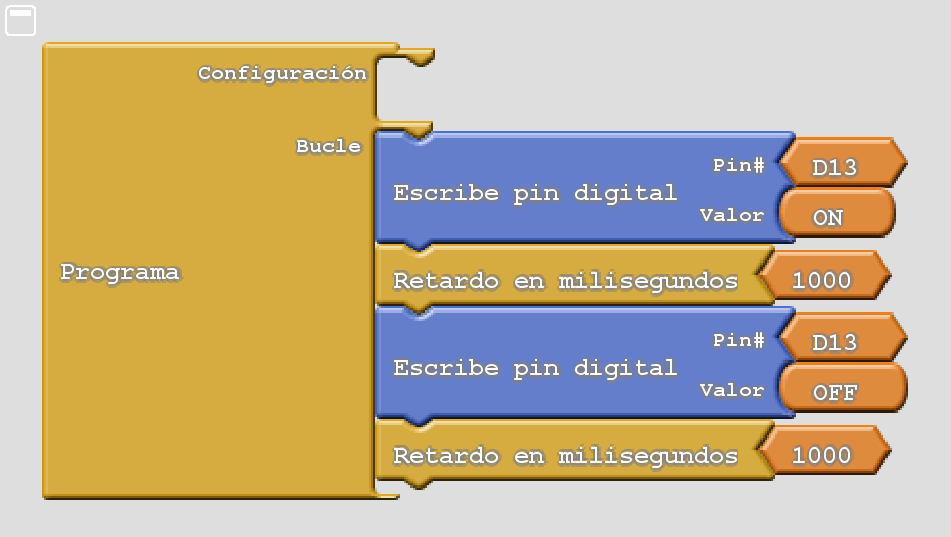
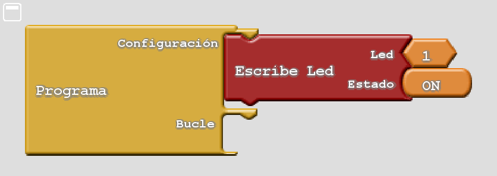

2. Ejercicios con led, encendido y apagado¶
Programar los bloques necesarios para resolver los siguientes problemas.
Encendido y apagado del led de la placa Arduino¶
Copiar el siguiente programa para encender el led D13 de la placa Arduino.

Copiar el siguente programa para hacer parpadear el led D13 de la placa Arduino.
Realizar un programa que consiga el parpadeo del led D13 con un tiempo encendido de una décima de segundo y un tiempo apagado de dos segundos.
{kind=link}
Encendido y apagado de los led del panel de control¶
Copiar el siguiente programa para encender el led D1 del panel de control Picuino.
Encender los ledes D1, D3 y D5 de forma permanente.
Encender el led D1, esperar un segundo, encender el led D2, esperar un segundo, continuar la secuencia hasta que estén encendidos los 4 primeros led. Una vez terminado, el programa mantendrá los 4 ledes encendidos.
Encender los ledes rojo, ámbar y verde como en un semáforo.
Primero se encenderá el led verde y permanecerá encendido durante 4 segundos. A continuación se apagará el led verde y se encenderá el led ámbar durante 3 segundos. Por último se apagará el led ámbar y se encenderá el rojo, que permanecerá encendido durante 4 segundos.
Esta secuencia se repetirá continuamente.
Modificar el ejercicio anterior para que el led ámbar parpadee tres veces, cambiando de encendido a apagado cada medio segundo, antes de pasar a encender el led rojo.
Programar una baliza que encienda alternativamente el led rojo y el led azul. Cada led debe permanecer encendido durante un segundo. Siempre debe estar uno de los dos led encendidos y nunca estarán los dos led encendidos a la vez.
Al comenzar el programa se encenderá el led D1 Pasado un segundo se apagará el led D1 y se encenderá el led D2. De esta forma continuarán encendiéndose los 5 primeros ledes, de manera que en cada momento solo un led estará encendido. Una vez terminada la secuencia, comenzará de nuevo desde el principio.
Realizar una modificación al ejercicio anterior para que en todo momento haya 2 ledes encendidos.
Al comenzar el programa deben encenderse los ledes D1 y D2.
Pasado un segundo se encenderán los ledes D2 y D3.
La secuencia continuará hasta que estén encendidos los ledes D6 y D1.
A partir de este momento, el programa se repetirá comenzando otra vez desde el principio.
{kind=link}